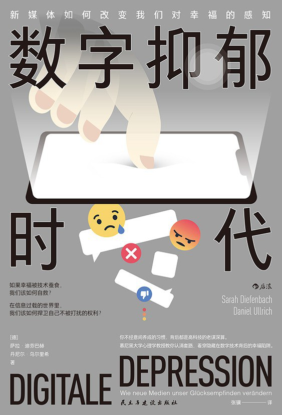

|  |
数字抑郁时代：新媒体如何改变我们对幸福的感知
|
引言 互联网时代的幸福
幸福保护专员在哪里
技术决定幸福吗
不要靠近脸谱网，会变得不幸
无限的可能令人不堪重负
技术设计：从工具到健康福祉
快醒醒，为幸福而战
互联网时代的幸福
第一章 技术取代直接的幸福拍下来的才是美景，传上网的才算幸福
感知受损
重要价值受损
社交互动受损
记录，而非体验
对碎片时间零容忍
消费vs.创造
人间烟火气，最抚凡人心
第二章 技术决定意义从自我提升到自我迷失
量化，让你离目标越来越远
从自我提升到自我迷失
1.在寻求自我反思的过程中，人们很容易迷失在金玉良言的丛林中
2.接踵而至的过多帮助，会让自我提升之路拥挤不堪
3.寻找解决方案时的错误顺序
4.因为执迷于追求平衡和完美而失去平衡
5.真正的努力再无容身之地
6.人们再也没有机会自我感觉良好了
别管喜不喜欢，反正多多益善
循规蹈矩的自我表现
技术传达的理想，到底由谁来决定
第三章 我的幸福适合发朋友圈吗幸福的人生都是相似的
千篇一律的生活有什么意思
社交媒体上的幸福模板
幸福就是让别人觉得你幸福
朋友圈里的幸福陷阱
幸福陷阱其一：最大化的多样性
幸福陷阱其二：惊鸿一瞥
幸福陷阱其三：为了“活动报告”而生活
幸福陷阱其四：规定好的幸福束缚
重拾享受幸福的能力
第四章 别关机，时刻保持联系24/7，秒回信息
假期？拿来吧你！
时刻保持联系，是一项基本权利
由小渐大的通信压力
手机时代的夫妻关系
是虚拟的亲密，还是真正的亲密
关机是不可能关机的
从小事做起，解放自己
第五章 技术这张通行证当技术将我们从尊重和体谅他人的责任中解放出来
技术带来特权
新讨论文化：你、我和网上
网络论坛说得对
约定，可以随时更改
互联网时代的克尼格行为准则手册
在矛盾的心态下，失去礼貌
第六章 由线上到线下当互联网规则入侵现实
时刻开启评论模式
哈哈，你上钩了！
一切皆可评价
为什么网上喷子那么多
互联网不会遗忘
虚拟世界入侵现实的心理学机制
匿名
追求刺激
大众的动力
线下世界的未来
第七章 新物种的诞生“科技人”的思考、感受和行为
回复强迫症——“科技人”的沟通交流
别问，问就上网查——“科技人”的思考和感知
现代健康指南
现代现象/综合征
现代治疗手段
专注力的瓦解——“科技人”的行为和习俗
“科技人”与产品的关系
“科技人”对时间、工作、空闲的态度
“科技人”的自我感知和自我表现
第八章 未来将怎样发展……
技术的发展趋势
隐藏式互动
虚拟世界中的财产和自我定义
彻底的虚拟现实：终于找到梦中情人了
新的世界秩序
技术训练的新时代
通往幸福之路
批判地看待技术可能的益处
观察“早期采用者”
分析和覆盖日常的例行公事
从经历出发
最后的思考